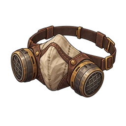

防塵マスク
R 頭
丸いフィルターの防塵マスク。大物の前でも息が乱れない。
概要
| 部位 | 頭 |
|---|---|
| レア度 | R |
| Lv1のHP | 18 |
| レベルごとの固定HP | 1 |
| HP成長率 | x1.04 |
| ガチャ | 通常ガチャ: ステージ81から (第7弾, 第8弾, 第9弾, 第10弾) 有料ガチャ: ステージ81から (第7弾, 第8弾, 第9弾, 第10弾) |
スキル
- ボスへの罠ダメージ +5%
レベル別のHP
Lv L のHP = round(基本HP × 成長率^(L-1)) + floor(固定HP × (L-1))
| Lv | HP |
|---|---|
| Lv1 | 18 |
| Lv10 | 35 |
| Lv20 | 57 |
| Lv30 | 85 |
| Lv50 | 172 |
| Lv99 | 939 |
レベル上限は最初 20。同じ防具を重ねるごとに 10 上がり、最大 99 です。